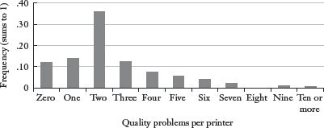
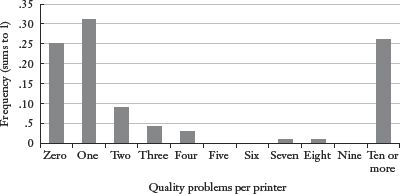
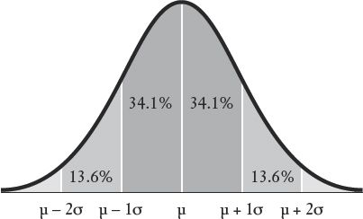
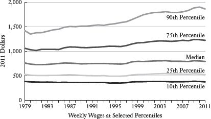
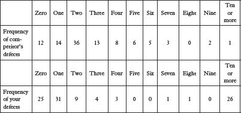
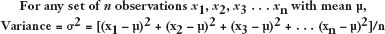
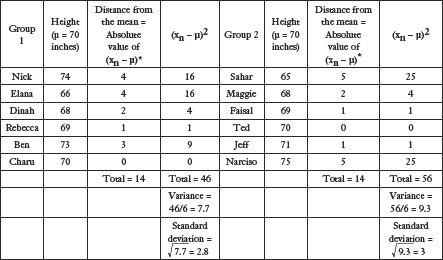
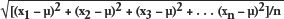

Who was the best baseball player of all time?
Let us ponder for a moment two seemingly unrelated questions: (1) What is happening to the economic health of America’s middle class? and (2) Who was the greatest baseball player of all time?
The first question is profoundly important. It tends to be at the core of presidential campaigns and other social movements. The middle class is the heart of America, so the economic well-being of that group is a crucial indicator of the nation’s overall economic health. The second question is trivial (in the literal sense of the word), but baseball enthusiasts can argue about it endlessly. What the two questions have in common is that they can be used to illustrate the strengths and limitations of descriptive statistics, which are the numbers and calculations we use to summarize raw data.
If I want to demonstrate that Derek Jeter is a great baseball player, I can sit you down and describe every at bat in every Major League game that he’s played. That would be raw data, and it would take a while to digest, given that Jeter has played seventeen seasons with the New York Yankees and taken 9,868 at bats.
Or I can just tell you that at the end of the 2011 season Derek Jeter had a career batting average of .313. That is a descriptive statistic, or a “summary statistic.”
The batting average is a gross simplification of Jeter’s seventeen seasons. It is easy to understand, elegant in its simplicity—and limited in what it can tell us. Baseball experts have a bevy of descriptive statistics that they consider to be more valuable than the batting average. I called Steve Moyer, president of Baseball Info Solutions (a firm that provides a lot of the raw data for the Moneyball types), to ask him, (1) What are the most important statistics for evaluating baseball talent? and (2) Who was the greatest player of all time? I’ll share his answer once we have more context.
Meanwhile, let’s return to the less trivial subject, the economic health of the middle class. Ideally we would like to find the economic equivalent of a batting average, or something even better. We would like a simple but accurate measure of how the economic well-being of the typical American worker has been changing in recent years. Are the people we define as middle class getting richer, poorer, or just running in place? A reasonable answer—though by no means the “right” answer—would be to calculate the change in per capita income in the United States over the course of a generation, which is roughly thirty years. Per capita income is a simple average: total income divided by the size of the population. By that measure, average income in the United States climbed from $7,787 in 1980 to $26,487 in 2010 (the latest year for which the government has data).1 Voilà! Congratulations to us.
There is just one problem. My quick calculation is technically correct and yet totally wrong in terms of the question I set out to answer. To begin with, the figures above are not adjusted for inflation. (A per capita income of $7,787 in 1980 is equal to about $19,600 when converted to 2010 dollars.) That’s a relatively quick fix. The bigger problem is that the average income in America is not equal to the income of the average American. Let’s unpack that clever little phrase.
Per capita income merely takes all of the income earned in the country and divides by the number of people, which tells us absolutely nothing about who is earning how much of that income—in 1980 or in 2010. As the Occupy Wall Street folks would point out, explosive growth in the incomes of the top 1 percent can raise per capita income significantly without putting any more money in the pockets of the other 99 percent. In other words, average income can go up without helping the average American.
As with the baseball statistic query, I have sought outside expertise on how we ought to measure the health of the American middle class. I asked two prominent labor economists, including President Obama’s top economic adviser, what descriptive statistics they would use to assess the economic well-being of a typical American. Yes, you will get that answer, too, once we’ve taken a quick tour of descriptive statistics to give it more meaning.
From baseball to income, the most basic task when working with data is to summarize a great deal of information. There are some 330 million residents in the United States. A spreadsheet with the name and income history of every American would contain all the information we could ever want about the economic health of the country—yet it would also be so unwieldy as to tell us nothing at all. The irony is that more data can often present less clarity. So we simplify. We perform calculations that reduce a complex array of data into a handful of numbers that describe those data, just as we might encapsulate a complex, multifaceted Olympic gymnastics performance with one number: 9.8.
The good news is that these descriptive statistics give us a manageable and meaningful summary of the underlying phenomenon. That’s what this chapter is about. The bad news is that any simplification invites abuse. Descriptive statistics can be like online dating profiles: technically accurate and yet pretty darn misleading.
Suppose you are at work, idly surfing the Web when you stumble across a riveting day-by-day account of Kim Kardashian’s failed seventy-two-day marriage to professional basketball player Kris Humphries. You have finished reading about day seven of the marriage when your boss shows up with two enormous files of data. One file has warranty claim information for each of the 57,334 laser printers that your firm sold last year. (For each printer sold, the file documents the number of quality problems that were reported during the warranty period.) The other file has the same information for each of the 994,773 laser printers that your chief competitor sold during the same stretch. Your boss wants to know how your firm’s printers compare in terms of quality with the competition.
Fortunately the computer you’ve been using to read about the Kardashian marriage has a basics statistics package, but where do you begin? Your instincts are probably correct: The first descriptive task is often to find some measure of the “middle” of a set of data, or what statisticians might describe as its “central tendency.” What is the typical quality experience for your printers compared with those of the competition? The most basic measure of the “middle” of a distribution is the mean, or average. In this case, we want to know the average number of quality problems per printer sold for your firm and for your competitor. You would simply tally the total number of quality problems reported for all printers during the warranty period and then divide by the total number of printers sold. (Remember, the same printer can have multiple problems while under warranty.) You would do that for each firm, creating an important descriptive statistic: the average number of quality problems per printer sold.
Suppose it turns out that your competitor’s printers have an average of 2.8 quality-related problems per printer during the warranty period compared with your firm’s average of 9.1 reported defects. That was easy. You’ve just taken information on a million printers sold by two different companies and distilled it to the essence of the problem: your printers break a lot. Clearly it’s time to send a short e-mail to your boss quantifying this quality gap and then get back to day eight of Kim Kardashian’s marriage.
Or maybe not. I was deliberately vague earlier when I referred to the “middle” of a distribution. The mean, or average, turns out to have some problems in that regard, namely, that it is prone to distortion by “outliers,” which are observations that lie farther from the center. To get your mind around this concept, imagine that ten guys are sitting on bar stools in a middle-class drinking establishment in Seattle; each of these guys earns $35,000 a year, which makes the mean annual income for the group $35,000. Bill Gates walks into the bar with a talking parrot perched on his shoulder. (The parrot has nothing to do with the example, but it kind of spices things up.) Let’s assume for the sake of the example that Bill Gates has an annual income of $1 billion. When Bill sits down on the eleventh bar stool, the mean annual income for the bar patrons rises to about $91 million. Obviously none of the original ten drinkers is any richer (though it might be reasonable to expect Bill Gates to buy a round or two). If I were to describe the patrons of this bar as having an average annual income of $91 million, the statement would be both statistically correct and grossly misleading. This isn’t a bar where multimillionaires hang out; it’s a bar where a bunch of guys with relatively low incomes happen to be sitting next to Bill Gates and his talking parrot. The sensitivity of the mean to outliers is why we should not gauge the economic health of the American middle class by looking at per capita income. Because there has been explosive growth in incomes at the top end of the distribution—CEOs, hedge fund managers, and athletes like Derek Jeter—the average income in the United States could be heavily skewed by the megarich, making it look a lot like the bar stools with Bill Gates at the end.
For this reason, we have another statistic that also signals the “middle” of a distribution, albeit differently: the median. The median is the point that divides a distribution in half, meaning that half of the observations lie above the median and half lie below. (If there is an even number of observations, the median is the midpoint between the two middle observations.) If we return to the bar stool example, the median annual income for the ten guys originally sitting in the bar is $35,000. When Bill Gates walks in with his parrot and perches on a stool, the median annual income for the eleven of them is still $35,000. If you literally envision lining up the bar patrons on stools in ascending order of their incomes, the income of the guy sitting on the sixth stool represents the median income for the group. If Warren Buffett comes in and sits down on the twelfth stool next to Bill Gates, the median still does not change.*
For distributions without serious outliers, the median and the mean will be similar. I’ve included a hypothetical summary of the quality data for the competitor’s printers. In particular, I’ve laid out the data in what is known as a frequency distribution. The number of quality problems per printer is arrayed along the bottom; the height of each bar represents the percentages of printers sold with that number of quality problems. For example, 36 percent of the competitor’s printers had two quality defects during the warranty period. Because the distribution includes all possible quality outcomes, including zero defects, the proportions must sum to 1 (or 100 percent).
Frequency Distribution of Quality Complaints for Competitor’s Printers

Because the distribution is nearly symmetrical, the mean and median are relatively close to one another. The distribution is slightly skewed to the right by the small number of printers with many reported quality defects. These outliers move the mean slightly rightward but have no impact on the median. Suppose that just before you dash off the quality report to your boss you decide to calculate the median number of quality problems for your firm’s printers and the competition’s. With a few keystrokes, you get the result. The median number of quality complaints for the competitor’s printers is 2; the median number of quality complaints for your company’s printers is 1.
Huh? Your firm’s median number of quality complaints per printer is actually lower than your competitor’s. Because the Kardashian marriage is getting monotonous, and because you are intrigued by this finding, you print a frequency distribution for your own quality problems.
Frequency Distribution of Quality Complaints at Your Company

What becomes clear is that your firm does not have a uniform quality problem; you have a “lemon” problem; a small number of printers have a huge number of quality complaints. These outliers inflate the mean but not the median. More important from a production standpoint, you do not need to retool the whole manufacturing process; you need only figure out where the egregiously low-quality printers are coming from and fix that.*
Neither the median nor the mean is hard to calculate; the key is determining which measure of the “middle” is more accurate in a particular situation (a phenomenon that is easily exploited). Meanwhile, the median has some useful relatives. As we’ve already discussed, the median divides a distribution in half. The distribution can be further divided into quarters, or quartiles. The first quartile consists of the bottom 25 percent of the observations; the second quartile consists of the next 25 percent of the observations; and so on. Or the distribution can be divided into deciles, each with 10 percent of the observations. (If your income is in the top decile of the American income distribution, you would be earning more than 90 percent of your fellow workers.) We can go even further and divide the distribution into hundredths, or percentiles. Each percentile represents 1 percent of the distribution, so that the 1st percentile represents the bottom 1 percent of the distribution and the 99th percentile represents the top 1 percent of the distribution.
The benefit of these kinds of descriptive statistics is that they describe where a particular observation lies compared with everyone else. If I tell you that your child scored in the 3rd percentile on a reading comprehension test, you should know immediately that the family should be logging more time at the library. You don’t need to know anything about the test itself, or the number of questions that your child got correct. The percentile score provides a ranking of your child’s score relative to that of all the other test takers. If the test was easy, then most test takers will have a high number of answers correct, but your child will have fewer correct than most of the others. If the test was extremely difficult, then all the test takers will have a low number of correct answers, but your child’s score will be lower still.
Here is a good point to introduce some useful terminology. An “absolute” score, number, or figure has some intrinsic meaning. If I shoot 83 for eighteen holes of golf, that is an absolute figure. I may do that on a day that is 58 degrees, which is also an absolute figure. Absolute figures can usually be interpreted without any context or additional information. When I tell you that I shot 83, you don’t need to know what other golfers shot that day in order to evaluate my performance. (The exception might be if the conditions are particularly awful, or if the course is especially difficult or easy.) If I place ninth in the golf tournament, that is a relative statistic. A “relative” value or figure has meaning only in comparison to something else, or in some broader context, such as compared with the eight golfers who shot better than I did. Most standardized tests produce results that have meaning only as a relative statistic. If I tell you that a third grader in an Illinois elementary school scored 43 out of 60 on the mathematics portion of the Illinois State Achievement Test, that absolute score doesn’t have much meaning. But when I convert it to a percentile—meaning that I put that raw score into a distribution with the math scores for all other Illinois third graders—then it acquires a great deal of meaning. If 43 correct answers falls into the 83rd percentile, then this student is doing better than most of his peers statewide. If he’s in the 8th percentile, then he’s really struggling. In this case, the percentile (the relative score) is more meaningful than the number of correct answers (the absolute score).
Another statistic that can help us describe what might otherwise be a jumble of numbers is the standard deviation, which is a measure of how dispersed the data are from their mean. In other words, how spread out are the observations? Suppose I collected data on the weights of 250 people on an airplane headed for Boston, and I also collected the weights of a sample of 250 qualifiers for the Boston Marathon. Now assume that the mean weight for both groups is roughly the same, say 155 pounds. Anyone who has been squeezed into a row on a crowded flight, fighting for the armrest, knows that many people on a typical commercial flight weigh more than 155 pounds. But you may recall from those same unpleasant, overcrowded flights that there were lots of crying babies and poorly behaved children, all of whom have enormous lung capacity but not much mass. When it comes to calculating the average weight on the flight, the heft of the 320-pound football players on either side of your middle seat is likely offset by the tiny screaming infant across the row and the six-year-old kicking the back of your seat from the row behind.
On the basis of the descriptive tools introduced so far, the weights of the airline passengers and the marathoners are nearly identical. But they’re not. Yes, the weights of the two groups have roughly the same “middle,” but the airline passengers have far more dispersion around that midpoint, meaning that their weights are spread farther from the midpoint. My eight-year-old son might point out that the marathon runners look like they all weigh the same amount, while the airline passengers have some tiny people and some bizarrely large people. The weights of the airline passengers are “more spread out,” which is an important attribute when it comes to describing the weights of these two groups. The standard deviation is the descriptive statistic that allows us to assign a single number to this dispersion around the mean. The formulas for calculating the standard deviation and the variance (another common measure of dispersion from which the standard deviation is derived) are included in an appendix at the end of the chapter. For now, let’s think about why the measuring of dispersion matters.
Suppose you walk into the doctor’s office. You’ve been feeling fatigued ever since your promotion to head of North American printer quality. Your doctor draws blood, and a few days later her assistant leaves a message on your answering machine to inform you that your HCb2 count (a fictitious blood chemical) is 134. You rush to the Internet and discover that the mean HCb2 count for a person your age is 122 (and the median is about the same). Holy crap! If you’re like me, you would finally draft a will. You’d write tearful letters to your parents, spouse, children, and close friends. You might take up skydiving or try to write a novel very fast. You would send your boss a hastily composed e-mail comparing him to a certain part of the human anatomy—IN ALL CAPS.
None of these things may be necessary (and the e-mail to your boss could turn out very badly). When you call the doctor’s office back to arrange for your hospice care, the physician’s assistant informs you that your count is within the normal range. But how could that be? “My count is 12 points higher than average!” you yell repeatedly into the receiver.
“The standard deviation for the HCb2 count is 18,” the technician informs you curtly.
What the heck does that mean?
There is natural variation in the HCb2 count, as there is with most biological phenomena (e.g., height). While the mean count for the fake chemical might be 122, plenty of healthy people have counts that are higher or lower. The danger arises only when the HCb2 count gets excessively high or low. So how do we figure out what “excessively” means in this context? As we’ve already noted, the standard deviation is a measure of dispersion, meaning that it reflects how tightly the observations cluster around the mean. For many typical distributions of data, a high proportion of the observations lie within one standard deviation of the mean (meaning that they are in the range from one standard deviation below the mean to one standard deviation above the mean). To illustrate with a simple example, the mean height for American adult men is 5 feet 10 inches. The standard deviation is roughly 3 inches. A high proportion of adult men are between 5 feet 7 inches and 6 feet 1 inch.
Or, to put it slightly differently, any man in this height range would not be considered abnormally short or tall. Which brings us back to your troubling HCb2 results. Yes, your count is 12 above the mean, but that’s less than one standard deviation, which is the blood chemical equivalent of being about 6 feet tall—not particularly unusual. Of course, far fewer observations lie two standard deviations from the mean, and fewer still lie three or four standard deviations away. (In the case of height, an American man who is three standard deviations above average in height would be 6 feet 7 inches or taller.)
Some distributions are more dispersed than others. Hence, the standard deviation of the weights of the 250 airline passengers will be higher than the standard deviation of the weights of the 250 marathon runners. A frequency distribution with the weights of the airline passengers would literally be fatter (more spread out) than a frequency distribution of the weights of the marathon runners. Once we know the mean and standard deviation for any collection of data, we have some serious intellectual traction. For example, suppose I tell you that the mean score on the SAT math test is 500 with a standard deviation of 100. As with height, the bulk of students taking the test will be within one standard deviation of the mean, or between 400 and 600. How many students do you think score 720 or higher? Probably not very many, since that is more than two standard deviations above the mean.
In fact, we can do even better than “not very many.” This is a good time to introduce one of the most important, helpful, and common distributions in statistics: the normal distribution. Data that are distributed normally are symmetrical around their mean in a bell shape that will look familiar to you.
The normal distribution describes many common phenomena. Imagine a frequency distribution describing popcorn popping on a stove top. Some kernels start to pop early, maybe one or two pops per second; after ten or fifteen seconds, the kernels are exploding frenetically. Then gradually the number of kernels popping per second fades away at roughly the same rate at which the popping began. The heights of American men are distributed more or less normally, meaning that they are roughly symmetrical around the mean of 5 feet 10 inches. Each SAT test is specifically designed to produce a normal distribution of scores with mean 500 and standard deviation of 100. According to the Wall Street Journal, Americans even tend to park in a normal distribution at shopping malls; most cars park directly opposite the mall entrance—the “peak” of the normal curve—with “tails” of cars going off to the right and left of the entrance.
The beauty of the normal distribution—its Michael Jordan power, finesse, and elegance—comes from the fact that we know by definition exactly what proportion of the observations in a normal distribution lie within one standard deviation of the mean (68.2 percent), within two standard deviations of the mean (95.4 percent), within three standard deviations (99.7 percent), and so on. This may sound like trivia. In fact, it is the foundation on which much of statistics is built. We will come back to this point in much great depth later in the book.
The Normal Distribution

The mean is the middle line which is often represented by the Greek letter µ. The standard deviation is often represented by the Greek letter σ. Each band represents one standard deviation.
Descriptive statistics are often used to compare two figures or quantities. I’m one inch taller than my brother; today’s temperature is nine degrees above the historical average for this date; and so on. Those comparisons make sense because most of us recognize the scale of the units involved. One inch does not amount to much when it comes to a person’s height, so you can infer that my brother and I are roughly the same height. Conversely, nine degrees is a significant temperature deviation in just about any climate at any time of year, so nine degrees above average makes for a day that is much hotter than usual. But suppose that I told you that Granola Cereal A contains 31 milligrams more sodium than Granola Cereal B. Unless you know an awful lot about sodium (and the serving sizes for granola cereal), that statement is not going to be particularly informative. Or what if I told you that my cousin Al earned $53,000 less this year than last year? Should we be worried about Al? Or is he a hedge fund manager for whom $53,000 is a rounding error in his annual compensation?
In both the sodium and the income examples, we’re missing context. The easiest way to give meaning to these relative comparisons is by using percentages. It would mean something if I told you that Granola Bar A has 50 percent more sodium than Granola Bar B, or that Uncle Al’s income fell 47 percent last year. Measuring change as a percentage gives us some sense of scale.
You probably learned how to calculate percentages in fourth grade and will be tempted to skip the next few paragraphs. Fair enough. But first do one simple exercise for me. Assume that a department store is selling a dress for $100. The assistant manager marks down all merchandise by 25 percent. But then that assistant manager is fired for hanging out in a bar with Bill Gates,* and the new assistant manager raises all prices by 25 percent. What is the final price of the dress? If you said (or thought) $100, then you had better not skip any paragraphs.
The final price of the dress is actually $93.75. This is not merely a fun parlor trick that will win you applause and adulation at cocktail parties. Percentages are useful—but also potentially confusing or even deceptive. The formula for calculating a percentage difference (or change) is the following: (new figure – original figure)/original figure. The numerator (the part on the top of the fraction) gives us the size of the change in absolute terms; the denominator (the bottom of the fraction) is what puts this change in context by comparing it with our starting point. At first, this seems straightforward, as when the assistant store manager cuts the price of the $100 dress by 25 percent. Twenty-five percent of the original $100 price is $25; that’s the discount, which takes the price down to $75. You can plug the numbers into the formula above and do some simple manipulation to get to the same place: ($100 – $75)/$100 = .25, or 25 percent.
The dress is selling for $75 when the new assistant manager demands that the price be raised 25 percent. That’s where many of the people reading this paragraph probably made a mistake. The 25 percent markup is calculated as a percentage of the dress’s new reduced price, which is $75. The increase will be .25($75), or $18.75, which is how the final price ends up at $93.75 (and not $100). The point is that a percentage change always gives the value of some figure relative to something else. Therefore, we had better understand what that something else is.
I once invested some money in a company that my college roommate started. Since it was a private venture, there were no requirements as to what information had to be provided to shareholders. A number of years went by without any information on the fate of my investment; my former roommate was fairly tight-lipped on the subject. Finally, I received a letter in the mail informing me that the firm’s profits were 46 percent higher than the year before. There was no information on the size of those profits in absolute terms, meaning that I still had absolutely no idea how my investment was performing. Suppose that last year the firm earned 27 cents—essentially nothing. This year the firm earned 39 cents—also essentially nothing. Yet the company’s profits grew from 27 cents to 39 cents, which is technically a 46 percent increase. Obviously the shareholder letter would have been more of a downer if it pointed out that the firm’s cumulative profits over two years were less than the cost of a cup of Starbucks coffee.
To be fair to my roommate, he eventually sold the company for hundreds of millions of dollars, earning me a 100 percent return on my investment. (Since you have no idea how much I invested, you also have no idea how much money I made—which reinforces my point here very nicely!)
Let me make one additional distinction. Percentage change must not be confused with a change in percentage points. Rates are often expressed in percentages. The sales tax rate in Illinois is 6.75 percent. I pay my agent 15 percent of my book royalties. These rates are levied against some quantity, such as income in the case of the income tax rate. Obviously the rates can go up or down; less intuitively, the changes in the rates can be described in vastly dissimilar ways. The best example of this was a recent change in the Illinois personal income tax, which was raised from 3 percent to 5 percent. There are two ways to express this tax change, both of which are technically accurate. The Democrats, who engineered this tax increase, pointed out (correctly) that the state income tax rate was increased by 2 percentage points (from 3 percent to 5 percent). The Republicans pointed out (also correctly) that the state income tax had been raised by 67 percent. [This is a handy test of the formula from a few paragraphs back: (5 – 3)/3 = 2/3, which rounds up to 67 percent.]
The Democrats focused on the absolute change in the tax rate; Republicans focused on the percentage change in the tax burden. As noted, both descriptions are technically correct, though I would argue that the Republican description more accurately conveys the impact of the tax change, since what I’m going to have to pay to the government—the amount that I care about, as opposed to the way it is calculated—really has gone up by 67 percent.
Many phenomena defy perfect description with a single statistic. Suppose quarterback Aaron Rodgers throws for 365 yards but no touchdowns. Meanwhile, Peyton Manning throws for a meager 127 yards but three touchdowns. Manning generated more points, but presumably Rodgers set up touchdowns by marching his team down the field and keeping the other team’s offense off the field. Who played better? In Chapter 1, I discussed the NFL passer rating, which is the league’s reasonable attempt to deal with this statistical challenge. The passer rating is an example of an index, which is a descriptive statistic made up of other descriptive statistics. Once these different measures of performance are consolidated into a single number, that statistic can be used to make comparisons, such as ranking quarterbacks on a particular day, or even over a whole career. If baseball had a similar index, then the question of the best player ever would be solved. Or would it?
The advantage of any index is that it consolidates lots of complex information into a single number. We can then rank things that otherwise defy simple comparison—anything from quarterbacks to colleges to beauty pageant contestants. In the Miss America pageant, the overall winner is a combination of five separate competitions: personal interview, swimsuit, evening wear, talent, and onstage question. (Miss Congeniality is voted on separately by the participants themselves.)
Alas, the disadvantage of any index is that it consolidates lots of complex information into a single number. There are countless ways to do that; each has the potential to produce a different outcome. Malcolm Gladwell makes this point brilliantly in a New Yorker piece critiquing our compelling need to rank things.2 (He comes down particularly hard on the college rankings.) Gladwell offers the example of Car and Driver’s ranking of three sports cars: the Porsche Cayman, the Chevrolet Corvette, and the Lotus Evora. Using a formula that includes twenty-one different variables, Car and Driver ranked the Porsche number one. But Gladwell points out that “exterior styling” counts for only 4 percent of the total score in the Car and Driver formula, which seems ridiculously low for a sports car. If styling is given more weight in the overall ranking (25 percent), then the Lotus comes out on top.
But wait. Gladwell also points out that the sticker price of the car gets relatively little weight in the Car and Driver formula. If value is weighted more heavily (so that the ranking is based equally on price, exterior styling, and vehicle characteristics), the Chevy Corvette is ranked number one.
Any index is highly sensitive to the descriptive statistics that are cobbled together to build it, and to the weight given to each of those components. As a result, indices range from useful but imperfect tools to complete charades. An example of the former is the United Nations Human Development Index, or HDI. The HDI was created as a measure of economic well-being that is broader than income alone. The HDI uses income as one of its components but also includes measures of life expectancy and educational attainment. The United States ranks eleventh in the world in terms of per capita economic output (behind several oil-rich nations like Qatar, Brunei, and Kuwait) but fourth in the world in human development.3 It’s true that the HDI rankings would change slightly if the component parts of the index were reconfigured, but no reasonable change is going to make Zimbabwe zoom up the rankings past Norway. The HDI provides a handy and reasonably accurate snapshot of living standards around the globe.
Descriptive statistics give us insight into phenomena that we care about. In that spirit, we can return to the questions posed at the beginning of the chapter. Who is the best baseball player of all time? More important for the purposes of this chapter, what descriptive statistics would be most helpful in answering that question? According to Steve Moyer, president of Baseball Info Solutions, the three most valuable statistics (other than age) for evaluating any player who is not a pitcher would be the following:
1. On-base percentage (OBP), sometimes called the on-base average (OBA): Measures the proportion of the time that a player reaches base successfully, including walks (which are not counted in the batting average).
2. Slugging percentage (SLG): Measures power hitting by calculating the total bases reached per at bat. A single counts as 1, a double is 2, a triple is 3, and a home run is 4. Thus, a batter who hit a single and a triple in five at bats would have a slugging percentage of (1 + 3)/5, or .800.
3. At bats (AB): Puts the above in context. Any mope can have impressive statistics for a game or two. A superstar compiles impressive “numbers” over thousands of plate appearances.
In Moyer’s view (without hesitation, I might add), the best baseball player of all time was Babe Ruth because of his unique ability to hit and to pitch. Babe Ruth still holds the Major League career record for slugging percentage at .690.4
What about the economic health of the American middle class? Again, I deferred to the experts. I e-mailed Jeff Grogger (a colleague of mine at the University of Chicago) and Alan Krueger (the same Princeton economist who studied terrorists and is now serving as chair of President Obama’s Council of Economic Advisers). Both gave variations on the same basic answer. To assess the economic health of America’s “middle class,” we should examine changes in the median wage (adjusted for inflation) over the last several decades. They also recommended examining changes to wages at the 25th and 75th percentiles (which can reasonably be interpreted as the upper and lower bounds for the middle class).
One more distinction is in order. When assessing economic health, we can examine income or wages. They are not the same thing. A wage is what we are paid for some fixed amount of labor, such as an hourly or weekly wage. Income is the sum of all payments from different sources. If workers take a second job or work more hours, their income can go up without a change in the wage. (For that matter, income can go up even if the wage is falling, provided a worker logs enough hours on the job.) However, if individuals have to work more in order to earn more, it’s hard to evaluate the overall effect on their well-being. The wage is a less ambiguous measure of how Americans are being compensated for the work they do; the higher the wage, the more workers take home for every hour on the job.
Having said all that, here is a graph of American wages over the past three decades. I’ve also added the 90th percentile to illustrate changes in the wages for middle-class workers compared over this time frame to those workers at the top of the distribution.

Source: “Changes in the Distribution of Workers’ Hourly Wages between 1979 and 2009,” Congressional Budget Office, February 16, 2011. The data for the chart can be found at http://www.cbo.gov/sites/default/files/cbofiles/ftpdocs/120xx/doc12051/02-16-wagedispersion.pdf.
A variety of conclusions can be drawn from these data. They do not present a single “right” answer with regard to the economic fortunes of the middle class. They do tell us that the typical worker, an American worker earning the median wage, has been “running in place” for nearly thirty years. Workers at the 90th percentile have done much, much better. Descriptive statistics help to frame the issue. What we do about it, if anything, is an ideological and political question.
Data for the printer defects graphics

Formula for variance and standard deviation
Variance and standard deviation are the most common statistical mechanisms for measuring and describing the dispersion of a distribution. The variance, which is often represented by the symbol σ2, is calculated by determining how far the observations within a distribution lie from the mean. However, the twist is that the difference between each observation and the mean is squared; the sum of those squared terms is then divided by the number of observations.
Specifically:

Because the difference between each term and the mean is squared, the formula for calculating variance puts particular weight on observations that lie far from the mean, or outliers, as the following table of student heights illustrates.

* Absolute value is the distance between two figures, regardless of direction, so that it is always positive. In this case, it represents the number of inches between the height of the individual and the mean.
Both groups of students have a mean height of 70 inches. The heights of students in both groups also differ from the mean by the same number of total inches: 14. By that measure of dispersion, the two distributions are identical. However, the variance for Group 2 is higher because of the weight given in the variance formula to values that lie particularly far from the mean—Sahar and Narciso in this case.
Variance is rarely used as a descriptive statistic on its own. Instead, the variance is most useful as a step toward calculating the standard deviation of a distribution, which is a more intuitive tool as a descriptive statistic.
The standard deviation for a set of observations is the square root of the variance:
For any set of n observations x1, x2, x3 . . . xn with mean µ,
standard deviation = σ = square root of this whole quantity =

* With twelve bar patrons, the median would be the midpoint between the income of the guy on the sixth stool and the income of the guy on the seventh stool. Since they both make $35,000, the median is $35,000. If one made $35,000 and the other made $36,000, the median for the whole group would be $35,500.
* Manufacturing update: It turns out that nearly all of the defective printers were being manufactured at a plant in Kentucky where workers had stripped parts off the assembly line in order to build a bourbon distillery. Both the perpetually drunk employees and the random missing pieces on the assembly line appear to have compromised the quality of the printers being produced there.
* Remarkably, this person was one of the ten people with annual incomes of $35,000 who were sitting on bar stools when Bill Gates walked in with his parrot. Go figure!